佛陀准许吃肉吗？学佛不必吃素吗？
冯冯
迷失在未来 / 誊录
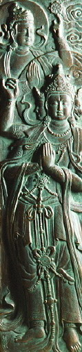“学佛是不一定要吃素的！”有好些人来信这样指教我：
“冯冯，你提倡学佛必须吃素，你错了！你完全错了！你以为不吃素就不能学佛吗？你看看，西藏、尼泊尔、缅甸、泰国、蒙古、日本的佛教徒，都吃肉！很多佛学大家都吃肉不吃素！”
又有一次读者抄录一位著名的导师的文章来指教我：“我们中国佛教徒，特别重视素食，所以学佛的人，每以为学佛就要吃素。还不能断肉食的，就误会为自己不能学佛。看看日本、锡兰、缅甸、暹罗，或者我国的西藏、蒙古的佛教徒，不要说，连出家人也都是肉食的，你能说他们不学佛，不是佛教徒吗？不要误会学佛就得吃素，不能吃素就不能学佛！学佛与吃素并不完全一致的，一般人看到有些学佛的，没有学到什么，只学会吃素，家庭里的父母兄弟儿女感觉讨厌，以为素食太麻烦。其实学佛的人应该这样：学佛后，先要了解佛教的道理，在家庭、社会，依照佛理做去，使自己的德行好，心里清净，使家庭中其他的人，觉得你在没学佛以前贪心很大，嗔很重，缺乏责任心与慈爱心，学佛后一切都变了，贪心淡，嗔恚薄，对人慈爱，做事更负责，使人觉到学佛在家庭社会上的好处。那时候要素食，家里的人不但不反对，反而生起同情心，渐渐跟你学。如一学佛就只学吃素，不学别的，一定会发生障碍，引起讥嫌。
“虽然学佛的人，不一定吃素，但吃素确是中国佛教良好的德行，值得提倡。佛教说素食可以养慈悲心，不忍杀害众生的命，不忍吃动物的血肉，不但减少杀业，而且对人类苦痛的同情心会增长。大乘佛法特别提倡素食，说素食对长养慈悲心有很大的功德。所以吃素而不能长养慈悲心，只是消除的戒杀，那还近于小乘呢？
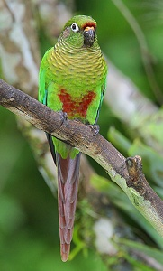“以世间法来说，素食的利益极大，较经济，营养价值也较高，可以减少病痛。现在世界上，有国际素食的组织，无论何人，凡是喜欢素食都可以参加，可见素食是件好事。学佛的人更应该提倡，但必须注意的，就是不要把学佛的标准提得太高，认为学佛就非吃素不可，遇到学佛的人就会问：有吃素吗？为什么学佛这么久，还不吃素呢？这样把学佛与素食合一，对于弘扬佛法是有碍的！”
抄录上文的读者某君在信上说：“冯冯，你看看，这位当今的中国大乘佛教导师也说：学佛不是一定要吃素的！把学佛与素食合一，对于弘扬佛法是有碍的！一学佛就只学吃素，一定会发生障碍！冯冯你还有什么话好说吗？你提倡学佛要吃素，难道你的学问比得上这位伟大的导师吗？你在大力提倡学佛吃素，简直是替佛教拉倒车！我劝你，收起你素食的膏药摊子吧！人家密宗的活佛喇嘛，都不吃素；人家吃肉，不是一样修成佛吗？你这样提倡信佛必须吃素，是引不起社会共鸣的，你只会把佛教带上灭亡之途！”
这封长信下半段还有不少对我的人身攻击，此处不抄录了。这一类指责的信，我每月收到好几封，我变成了反对素食者的众失之的，好像我才是唯一提倡学佛素食的人了。
对于这种来信，我向来是一笑置之，把它抛到壁炉去烧掉取暖，感谢他们送给我几秒钟的火焰，让我暖暖脚板，反正吃了肉，因果债总是要还的，到时候会后悔莫及的。不过，这一封信引用了一位大乘佛教最受尊敬的导师的文句，而又是我最尊敬的导师之一，我看来函有些误解了导师的文章真正用意，我就不得不自动来写这一篇拙文来为导师的文章分辩一下了。
这位年高德劭的导师，他的戒行与教言，一向以严谨见称于世，一言一行，无不堪为人师，万众景仰，他自己是恪守清规持素的高僧，怎么会忽然主张学佛不必吃素？他的文句内，我读来读去，也仍然觉得他是在提倡吃素，并不是否定吃素。读者不应断章取义去误解他的用意，更不应该因为他有两三句说素食与学佛合一对弘法有障碍，就误解他是反对学佛者吃素！不过，也不能否认，这几句是很容易引起误解，尤其是容易成为反对者的把柄！
读文章，必须贯融全文，加以思考，不可断章取义！现在即已有反对者曲解导师的真正文义而到处说导师以大乘导师之尊反对素食（我已收到二十多封来信这样说），我就不得不在此为导师的文章作一辩护及诠释了。
我的读后了解是，导师并非反对素食，他文中说得很明白：“吃素确是中国佛教良好的德行，值得提倡！”和“大乘佛法特别提倡素食，说素食对长养慈悲心有很大的功德。”这都是完全符合佛教的意见，并无反对素食或提倡肉食之意。我揣测导师之意，是在说如果首先就叫人吃素，那可能就会使很多人不肯学佛。应该先使人明白了佛理，才去吃素。因为一般人吃惯了肉荤，一下子改不过来。导师之意，可能是恐怕人们以为学佛非先行吃素不肯接受佛教。导师说的“把学佛与素食合一对于弘扬佛法是有碍的”，意思是一般人怕吃素，学佛要先吃素，人们就不来学佛了。导师说的“障碍”，并不是说吃素对学佛有“障碍”或无益处，吃素生慈悲心与清净心，怎会对学佛有障碍呢？读者不可着了文字相，死钉“障碍”两字是“妨碍阻止”之意！那断非导师的原意！导师是希望越来越多人学佛，因此他慈悲，提出方便法门，不以吃素为先决条件，以便接引很多很多人信佛学佛，方便法以普度众生，这是导师的原意。换言之，可以解释为：“你们先深入经藏（理），慢慢明白了佛理，才吃素也可以的（行）。”
导师说：“一般人看到有些学佛的没有学到什么，只学会吃素，使家人讨厌。”这也是常见的现象。我收到的来信，就很多人说：“看了你的书，我开始吃素学佛，但是家里都反对得很，说一家人，又要分出吃素吃荤两种菜，好麻烦；家人说，吃素营养不良，不吃肉，怎么活啊？”又有人来信说：“为了我吃素，父母亲已经责骂吵闹多次了。”有的说丈夫骂她吃素拜佛是迷信。又有人对太太说：“你再吃素，我就跟你离婚！”，又有人说：“听你的话吃素，孩子都长不好，又瘦又弱，你这样害得我的孩子发育生长不好，你太没有道德了！”
又有人来信说：“你口口声声说吃肉对健康不好，但是，狮子为百兽之帝，老虎为百兽之王，豹、熊、豺狼这些肉食动物猛兽，不是吃肉吃得很强健吗，你吃素对健康怎么好，但是你看看，那些出家人吃素，个个都吃到骨瘦如柴，脸有菜色，疾病业生。你又看看西洋人，他们都身材高大，体魄健美，相貌英俊，因为他们多吃牛排呀！你能否定这些事实吗？“。
又有人来信说：“你们佛教讲因果，主张吃素，应该凡是吃素的都上天堂了，吃肉的都下地狱是不是？为什么吃草的牛、羊、畜类都难逃屠宰杀死呢？为什么吃肉的动物例如狮、虎、毒蛇，却获得优待，在动物园做上宾？可见吃素是没有好处的！你们佛教又说什么信佛社会才安宁！世界才会和平！为什么信佛的印度、越南、缅甸、中国等国家都那么衰弱，而信基督教的国家美国却那么富强呢？美国人不吃素，他们吃很多肉，照你们佛教来说，不是造了很多杀孽吗？应该都下地狱才是呀？为什么美国人那么富强又那么幸福呢？分明是你们佛教的道理不对了！你应该立刻悔改归主，认识真神才对！“
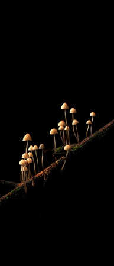 还有人来信教育我说：”你每一篇文章都鼓吹学佛必须吃素，这恐怕是你们少数人的偏知偏见吧！你对于真正的佛教还是认识不够的！你知否？原始佛教是不吃素的，佛陀和他的弟子都不吃素，托钵乞化，人家布施什么就吃什么，素也吃，肉也吃，佛陀准许弟子吃三净肉，难道你不知道吗？西藏喇嘛教都吃肉，尼泊尔、锡金的喇嘛，蒙古的喇嘛，都吃肉，还可以娶妻，你可以说他们不是佛教徒吗？在海外及国内的密宗大师和弟子们，也都吃肉，也不必戒色，但是不都修得很好吗？至少他们身体比你们吃素的显教信徒强壮得多，至少他们过的是人的生活，正常的人生，没有违反自然！人家就是比你们显教吃素的人修法修得好，人家可以打坐凌空浮起，头上全身放光，驱神役鬼，神通广大，你们显宗有什么？除了出了一个小有天眼的冯冯，还有什么能人？就拿你的天眼来说，又能和密宗的大神通比吗？从比例来说，就已证明你们吃素的人修行神通不及吃肉的了！吃素根本就不是佛教本意！你知道吗？中国古代佛教僧人都是吃肉的，不是吃素的。西安大雁塔的志书记载：“唐慈恩寺有巨雁集于庭，僧捕得将烹食之，一老僧曰：此雁王也，因瘗之，造塔于上名雁塔。”可证唐代僧人是吃肉不吃素的，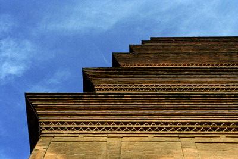玄奘大师在慈恩寺译经，自然也是吃荤吃肉的！玄奘著作大唐西域记卷九说：“摩迦陀国之因陀罗势罗窭诃山东峰迦蓝前，有窣堵波谓亘娑。昔此伽蓝习玩小乘，渐教也，故开三净之食（注：三净食者，谓雁也，犊也，鹿也），而此伽蓝遵而不堕。其后三净求不时获。有比丘经行，忽见群雁飞翔，戏言曰：“今日众僧中食不充，摩诃萨埵宜知是时。”言声未绝，一雁退飞，当其僧前，投身自殒。比丘见已，具白众僧。闻者悲感，咸相谓曰：“如来设法导诱随机，我等守愚，遵行渐教。大乘者，正理也，宜改先执，务从圣旨。此雁垂诫，诚为明导，宜旌厚德，传记终古。”于是建窣堵波，式昭遗烈，以彼死雁瘗其下焉。“你看！有此文献为证，中国和尚本来也是吃荤的！和尚吃素是后来的事，吃素于佛经是毫无根据的！冯冯！你自己吃素，是你自家的私事，你附从吃素的出家人去鼓吹人人都应吃素，那就是没有道理了！你文章内说嘉瓦仁波切也是吃素的，那更荒谬！藏密哪有吃素的呢？从密勒日巴到现代的密教活佛，都没有吃素的呀！人家吃肉还不是修成了佛？你知道吗？被屠宰了的牛、羊、鸡、鸭、牲口，它们的肉，若得不到修密法的修行人吃掉，它们才不得超生呢！修密的人吃了畜生的肉，为之念往生咒及其他大神力的密咒，才可以超度它们！否则，它们永远不能超生至极乐世界，只有堕落地狱！你懂吗？我看你是一窍不通！你必须知道，吃肉就是超度畜生！这才是真正的慈悲！你懂吗？就拿你们显宗的著名导师来说，他的文章不是也说过吗？“不要误会学佛就得吃素，不吃素就不能学佛，学佛与吃素并不是完全一致的。”“一般人看到有些学佛的，没有学到什么，只学会吃素！”“这样把学佛与素食合一，对于弘扬佛法是有碍的。”……你看！连你们的导师也主张学佛不必吃素，也说连出家人都是肉食的（按：指西藏、蒙古），你冯冯算老几？鼓吹什么吃素？你懂什么佛法？你看，你们的导师也说吃素对学佛修行是障碍，这就是说吃素修不好！”
这封信很长，下面还有很多“妙文”，乃至于向我挑战，要求和我比划比划，看他们吃肉的密教弟子神通大，还是我这吃素的显教弟子神通大。“如果你比输了！今后你可不得再骗人去吃素，贻害众生！误导苍生！”信中这样说。
这封信是不必抄录下去了，这里我要简单地公开答覆几段。但是，先要声明，我是显密双修的自修人，并不属于显密任何师父门下，我没有皈依任何宗师，我说的话，只代表我个人的管见，不能视为我代表显教，也不能代表大乘任何宗教，我说错了，全归自己个人负责，不得视为显密之争，或大小乘之争。这纯粹是冯冯个人的应战，一切文责自负！冯冯也是石头爆出来的猴子，没有师门法系，也没有本宗，更无大神通，只是以戒为师，戒行也微不足道，斗神通么？还是请免罢！我又不会移山倒海之术，又不懂瑜伽神通入定一年半年，更不会驱神役鬼，飞天遁地，比什么划？根本无可比你们的大神通！我确是“光会吃素”，“学佛是什么还没学到”（借用导师法语，当然导师并非指我而言，这只是我自己的比况，幸勿误会。），要比，就比吃素吧！别的我都无可奉陪！我提倡吃素，亦只是对事不对人，从未抨击密宗，我提倡吃素亦是盼望无论大小乘显密教，佛教及外教，人人都生慈悲心，下慈悲种，又兼得保健，预防疾病，长寿平安，没想到引起有些人大动肝火，视我为眼中钉，必须诛之而后快！像上面那封信，就指责我“无理抨击密宗，最大恶极！”真是罪无可逭了！所以，这里要声明，下文毫无抨击密宗之意，亦不能代表显宗的意见，假如仍有任何密宗大师要运用大神通降罪，就降罪给吾猴可也，千万别扯到别的显宗信徒头上去，更别闹成密显大战，可乎？
首先，我要表示憾极的是，这位导师的文句被人断章取义来反对学佛吃素！导师必定再也想不到吧？我们无足轻重的俗人，一言尚可闯祸，一言兴邦，一言丧邦，何况是身为众望所归，万众尊崇的导师的一言？影响之大，岂能估计？导师明明是主张吃素，只为慈悲方便接引众生，才这样权宜折中。他的用意，可说是上承佛陀暂许弟子吃三净肉之意的。佛陀在世时，为方便接引，暂准弟子吃三净肉，只是权宜而已，佛陀不是说过吗？“我在世时，尔等可食三净肉，我入灭后，无论他杀自死之肉，均不得食！”（此为大意，原文请读阿含经等诸经。）这位导师的文章，在我读来，是毫无主张学佛可以吃肉吃荤的！如今竟被肉食者利用为把柄，来反对学佛吃素，岂不可叹？恐怕这一次的把柄，是会长久被人利用下去了！
另一件憾事，就是嘉瓦仁波切活佛被世人诬陷为肉食者！
嘉瓦仁波切活佛，每一次在美、加、欧洲访问，接受各国电视问话时，他都很庄严地，郑重地声明；“我和我的弟子，都是吃素的！”
“传说西藏密宗吃肉及不戒性欲，有此事吗？”外国记者常这样问。
“我只能代表我自己与弟子们说话。”嘉瓦仁波切活佛微笑回答：“我们是恪守佛教戒律的，佛陀遗教教弟子守戒，以戒为师及吃素，戒杀生、戒淫──在家人不须戒正淫，只戒邪淫，出家人则正邪淫均须戒绝。戒偷盗、戒妄语、戒饮酒，这是学佛人的基本五戒，更别说比丘圆具足戒二百五十戒了！我和我弟子们都是恪守佛戒的，我们都吃素，也没有娶妻的事。”
“但是，”发问者又问：“藏密与尼泊尔、锡金、不丹，还有日本东密的喇嘛僧，不是都可以吃荤肉可以嫖妓……你怎样解释？”
嘉瓦仁波切活佛微笑；“我方才说过，我和我的弟子们，都是守戒的！别人的事，最好你去问他们，请他们自己回答吧！”
每次嘉瓦仁波切活佛上电视，我都看的，我听到他同样的回答很多次。我也见到过嘉瓦仁波切师徒吃素，而且还“守午”（过午不食），他在印度的喇嘛宫中居住，都是如此吃素守午，宫中全是喇嘛僧，根本没有娶太太那回事！他们戒律森严得很，可说比一般寺院还更严格！（关于嘉瓦仁波切的生活与修行，美国主要电视均有实况摄录，公映多次，加拿大国家电视宗教节目，也有摄制及公映过。）
或许，这已经足以答覆上面引述问难来信的“密宗出家人也可以食肉及不戒色欲”的问题了吧？
假如嘉瓦仁波切不能代表藏密，还有谁可以？对了，还有后藏班禅喇嘛。根据接近班禅教派的人士，在电视上的叙述，他也是吃素的，而并非吃荤吃肉的！达赖与班禅，都是恪守佛戒吃素的，难道他们两位活佛也都做错了吗？
由此可见，部分密宗人士吃荤吃肉及不守戒，显然并非密宗本意！可能只是采取“渐戒”的方式吧！(也有些人是习惯吃肉，吃不惯素食，就无意改为素食。)
至于那些自称畜类的肉，非得由学密的人吃了才可以超生的。此语不知出自何经何典？我遍查大藏经六个月之久，都找不到此语的经文。我请教一位密宗大师，他的回答是：“我们不得已而吃了畜类的肉，心中不安，唯有念咒助之往生。这是聊以弥补内心的难过，至于说只有吃了它们的肉，它们才得以超生，此非密教本说，大概是一些无知弟子杜撰出来的，是与密教无关系的，没有听过任何密教宗师这样开示过。”
这位密宗大师的解释，还很中肯，若照某些人的歪曲观念：只有被密宗的人吃了肉的畜生才得超生，那么，人又何必修？何必念佛求生乐土，干脆把人都杀掉，烹而食之，然后为之念念往生咒，不就都超度了吗？还有什么佛法？
至于来函说吃肉的修密法，神通比吃素的大。我不拟争论。只想反问几句：学佛的目的是为了求神通吗？神通能敌业力吗？大神通可破因果吗？神通大，就一定成正果吗？世上古今神通大的人、魔、妖、邪也很多，他们都成了佛吗？
吃素的目的之一，就是要避免助长杀业恶因，吃肉纵然不是自己亲手去杀生，也间接助长了杀生，种下恶因，必得恶果恶报。佛在楞伽经中甚至明确的交代：“凡杀生者，多为人食；人若不食，亦无杀事，是故食肉与杀同罪。”这在现代化的专业屠宰场、超级市场乃至一般市场，都可得到最好的印证。这些杀生偿命的因果律，可以用神通法术改变吗？善恶到头皆有报，只争来早与来迟。果报因缘成熟，就会发动，连佛陀也说衪不能破因果，请问大神通的大师们，你们的神通能超越佛陀吗？
上文提及另一来函质问我，美国人吃牛排而身强力壮，安享幸福，果报在哪里？在哪里？没看见美国人的心脏病、癌症、高血压、中风……等等，比贫穷国家，少吃肉的民族为多吗？这不是吃肉的现实报应吗？来世的事难说，那么现世的果报也不可信吗？神通大如某某法王，为什么又会在盛年死于癌症呢？佛说神通不可恃，这一句，你们没听过吗？
(当然，吃素的人也有患这些疾病的，不过，在比例上，少于吃肉的人，另文再谈。)
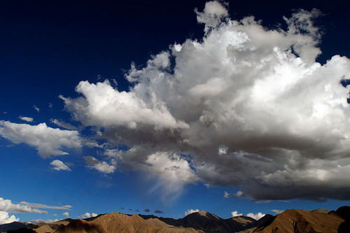至于说到蒙藏与尼泊尔等地的僧人吃肉及不戒淫，这也只能说一部份教派如此而已，并非全部喇嘛如此！达赖与班禅，他们不是严格守戒及吃素吗？为什么不拿他们主流的喇嘛来做榜样？却要拿非主流的来做代表呢？这不是以偏概全吗？怎可以“一竹篙打了一船人”般地通指凡是密宗，凡是喇嘛都是吃肉和不戒淫的？
也有人这样反驳我，说到那些地区，因为没有素菜出产，所以僧人不得不吃肉；又说道那边人口稀少，所以僧人不得不行淫以求生育。我认为这也是狡辩。
为什么同一地区的达赖与班禅他们的教派却又能吃素呢？又能戒淫呢？说那些地区没有蔬菜生产，不妨实地去观察一下吧！那些地区从前也许是较少蔬菜出产，现在已经大量生产了，为什么也还是有人不肯吃素呢？为什么到了台湾、美、加的人，也还是吃肉？难道没有蔬菜吗？
说到国家富强，前函指出是信基督教所致，又指出信佛的国弱，那么，我反问；苏联那么强大它也是基督教国家吗？拉丁美洲全是基督教国家，为什么他们那么弱小贫穷？日本也算是佛教国家，为什么那么富强？中国大陆不是佛教国家，为什么还是穷？印度老早就没有佛教，这一千年来，为什么那么贫穷弱小？它在历史上的亡国，都是在佛教衰灭之后，并非因佛教而亡！弄清楚没有？最好先研究清楚历史才说吧！
现在，我要恭录一些佛经的文字，来证明到底佛陀是否主张弟子可以吃肉。
楞严经，“业果相续”段经文说：
“佛说，是等则以杀、贪为本，以人食羊，羊死为人，如是乃至十生之类，死死生生，互来相啖，恶业俱生，穷未来际。”又云：“汝等当知，是食肉人，纵得心开似三摩地，皆大罗刹！报终必沉生死苦海，非佛弟子，如是之人，相杀相吞，相食未已，云何是人得出三界？”
佛陀吃肉吗？假如祂吃肉，又怎能设戒？又怎能在很多说法之时都诫弟子勿吃肉呢？又怎能说出上提的一段教训来警戒世人不可吃肉？佛陀若要吃肉，留在皇宫中做太子帝王享受山珍海味不好吗？为什么要到外面说法？外面比皇宫内多肉吃吗？
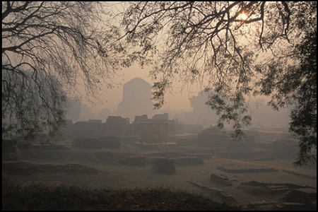有些佛学大学者，在其著作中指出楞严经非佛所说，甚至有些大学者指它是伪经，这些人把妙法莲华经也否定掉。他们的出发点是什么？很难推测。我只能说他们是从人文角度去妄断而已。不过，据查这批人都是嗜吃荤肉的佛学大家，有学位、有盛名，爱吃肉吃鱼吃鸡鸭海鲜，不守戒，还有一位以闹桃色案出名，当然，楞严经的确会如眼中钉了。不把楞严经考证成为伪经，那还行？倡说佛陀也吃肉，也是这批学者领先的，看！连佛陀都吃肉！他们这样高声大叫！
大学者们竟敢诬指佛陀吃肉！真该下拔舌地狱！这是他们将来必去的地方！可不是我诅咒他们！凡是谤经谤法的，误导众生吃肉去造恶孽的人，就是断了自己与他人的慈悲种。佛经说，这种口业恶因，是一定到拔舌地狱受苦的！
如果信这些学问家们的考据，诬指楞严经是伪经，那么，涅磐经是否也是伪经呢？
涅磐经内载：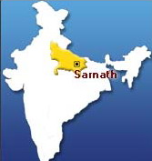
大迦叶问佛说：“云何如来不听食肉？”，佛言：“夫食肉者，断大慈种！”
请问大学者们，梵网经也是伪经么？因为，梵网经内说：
“若佛子……一切众生肉不得食！夫食肉者，断大慈悲佛性种子，一切众生见而舍去，是故，一切菩提，不得食一切众生肉，食肉得无量罪！”
再请教于大学者们座前：“阿含经是否亦是伪经？”
杂阿含经卷四十四载世尊说偈内有这几句：
“……净业以自净，是生于受持，不杀亦不盗，不淫不妄语……于一切众生，常生慈悲心……。”
吃肉，就必须把动物杀死，这算慈悲吗？杀死动物，使之痛苦哀号挣命悲叫，这算慈悲心吗？不是你们亲手杀的，动物就没有生死挣扎痛苦吗？你们吃了它们的肉，就心安了吗？就不必负担杀业吗？就是因为你们爱吃肉，才有人去做屠户杀生，你们能说不是你们间接杀生吗？你们吃一块肉，也须负一块肉的恶因恶果！别以为逃得了！
杂阿含经卷四十九载屈摩夜叉礼佛而说偈：
“……贤德有正念，贤德常正念，不杀不教杀，不伏不教伏，慈心于一切，心不怀怨结。”尔时，世尊告屈摩夜叉鬼：“如是，如是，如汝所说！”
夜叉鬼也知“不杀不教杀”，现在的一些佛学大学者居然诬指佛陀吃肉（吃肉就是不戒杀的变体），大学者们，能不内疚惭愧乎？你们的佛学理论说得天花乱坠，又如何？不守戒，算是佛教徒吗？
同上经同卷，载有，毕陵伽鬼子母为其子说偈：“毕陵伽鬼子，汝今莫复啼，当听彼比丘，诵习法句偈，若知法句者，能自护持戒，常离于杀生，真实不妄语，能自舍非义，解脱鬼神道！”
鬼子母亦知佛陀弟子持戒，乃教其子远离杀生及不妄语，她叫儿子向佛陀的十大弟子之一阿那律陀比丘（天眼第一）学习，可见佛陀的弟子也都是守戒的。既守戒，就不会有犯戒而去杀生或吃肉或行淫！实在不能说蒙、藏、尼、锡地区的部分僧人不守戒吃肉与行淫，有任何佛经根据或准许！只能说是个人任意自为！
同经卷三十七，第一○六○节，说明十不善业是非法，其中一段：
“如是我闻，一时，佛在舍卫国祗树给孤独园，尔时，世尊告诸比丘：‘有非法，有正法，谛听！善思！当为汝说。何等为非法？谓杀生……乃至邪见，是名非法。何等为正法？谓不杀生……乃至正见，是名正法！’佛说此经已，诸比丘闻佛所说，欢喜奉行！”
世尊告诸比丘：“有非律，有正律，谛听！善思！当为汝说。何等为非律？谓杀生乃至邪见，是名非律。何等为正律？谓不杀乃至正见，是名正律。”佛说此经已，诸比丘闻佛所说，欢喜奉行……。 ”
佛陀的及身弟子比丘众都欢喜奉行戒律，吃肉及行淫的，必定绝无仅有。佛陀身后的弟子信徒，就很难说了，各有其犯戒的理由，什么地区情况不同，环境不许可，时代不同了……理由多多；不守戒就干脆承认罢，为什么嘉瓦仁波切与班禅喇嘛他们的宗派又都能守戒呢？
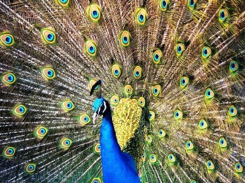大学者们，亦能否定阿含经吗？若不能，请多读经，多奉行！佛在阿含时，已常说正法正律，谓杀生为邪法邪律，邪见非法。佛陀戒杀生，而吃肉是杀生的，即使三净肉，也还是有杀生的意念恶业！佛与众弟子，怎会吃肉？弟子供养佛，又怎敢以肉类供养之？富有的弟子不敢用肉供佛，穷的印度人又哪敢？更哪有肉食来供佛？外教根本不会布施给佛与佛徒，如有，也很少。他们更不会将昂贵的肉食布施给佛教与众比丘？诬指佛陀也吃肉，你们可“收档”矣！难道你们大学者还想说佛陀抛弃了皇宫内的山珍海味大鱼大肉不吃，反倒去外边托钵吃人家的粗肉粗鱼么？你们真是匪夷所思，问你们自己吧！你们会不吃上等肉食却去乞吃外边的下等肉食吗？大概世上没有这样的人吧？
让我恭录一段楞严经经文：
楞严经卷六：
阿难叩问世尊一段节录如下：“……如来应世，我虽未度，愿度末劫一切众生。
“世尊！此诸众生，去佛渐远，邪师说法，如恒河沙，欲摄其心，入三摩地，云何令其安立道场，远诸魔事，于菩提心得无退屈？”
尔时世尊于大众中，称赞阿难：“善哉善哉！如汝所问安立道场，救护众生，末劫沉溺，汝今谛听，当为汝说。”
阿难大众，唯然奉教。
佛告阿难：“汝常闻我毗奈耶中，宜说修行三决定义，所谓摄心为戒，因戒生定，因定发慧，是则名为三无漏学。
“阿难！云何摄心？我名为戒，若诸世界，六道众生，其心不淫，则不随其生死相续，汝修三昧，本出尘劳，淫心不除，尘不可出！纵有多智，禅定现前，如不断淫，必落魔道！上品魔王，中品魔民，下品魔女。彼等诸魔，亦有徒众，各各自谓，成无上道。”
“我灭度后，末法之中，多此魔民，炽盛世间，广行贪淫，为善知识，令诸众生，落爱见坑，失菩提路。”
“汝教世人修三摩地，先断心淫，是名如来先佛世尊，第一决定，清净明诲。”
“是故阿难！若不断淫，修禅定者，如蒸砂石，欲其成饭，经百千劫，只名热砂！何以故？此非饭本，砂石成故！”
“汝以淫身，求佛妙果，纵得妙悟，皆是淫根，根本成淫，轮转三涂，必不能出，如来涅磐，何路修证？”
“必使淫机身心俱断，断性亦无，于佛菩提，斯可希冀，如我此说，名为佛说，不如此说，即波旬说！”
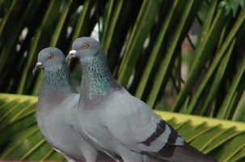兹再恭录一段楞严经，接上段的下文：
上面恭录一段，已可证明佛陀教人戒淫，既教弟子戒淫，又怎么会准许弟子行淫？佛教在家居士只戒邪淫，不戒正淫，是为生育故。但出家人就正淫亦须戒绝，此乃佛制，大小乘，显密教，都无二致。凭什么说蒙、藏、尼、锡、不丹的出家喇嘛有特权可以行淫，甚至享受人民新娘的初夜权？那是佛制所容许的吗？只能说是当地风俗使然吧！凡是有人做的，就是对的吗？有人犯奸淫，你也跟着去做吗？有人杀人，你也去杀吗？
“阿难！又诸世界，六道众生，其心不杀，则不随其生死相续。”
“汝修三昧，本出尘劳，杀心不除，尘不可出，纵有多智，禅定现前，如不断杀，必落神道，上品之人，为大力鬼，中品则为飞行夜叉，诸鬼帅等，下品当为地行罗刹，彼诸鬼神，亦有徒众，各各自谓，成无上道。我灭度后，末法之中，多此鬼神，炽盛世间，自言食肉得菩提路！”
“阿难！我令比丘食三净肉，此肉皆由我神力化生，本无命根，汝婆罗门，地多蒸湿，加以砂石，草菜不生，我以大悲神力所加，因大慈悲，假名为肉，汝得其味！奈何如来灭度之后，食肉生肉，名为释子！”
“汝等当知，是食肉人，纵得心开似三摩地，皆大罗刹，报终必沈生死苦海，非佛弟子。如是之人，相杀相吞，相食未已！”
“云何是人得出三界？汝教世人修三摩地，次断杀生，是名如来先佛世尊，第二决定清净明诲。”
“是故阿难，若不断杀，修禅定者，譬如有人自塞其耳，高声大呼，求人不闻，此等名欲隐弥露！”
“清净比丘及诸菩萨，于歧路行，不踏生草，况以手拔？云何大悲？取诸众生血肉充食。”
“若诸比丘，不服东方丝棉绢帛，及时此土靴履裘毳，乳酪醍醐，如是比丘，于是真脱，酬还宿债，不游三界。”
“何以故？服其身分，皆为彼缘，如人食其地中百谷，足不离地，必使身心，于诸众生，若身身分，身心二涂，不服不食，我说是人真解脱者，如我此说，名为佛说，不如此说，即波旬说！”
上面恭录这一段佛说，还不足够证明佛陀叫弟子们戒杀生吃肉吗？非但戒吃肉，还禁止穿用血肉众生的皮革毛羽所做的衣服和丝绸，因为仍有残杀生命的因缘作用。
在这一段，佛陀又指出，他入灭以后，吃肉的人，竟还自称是佛徒呢！此种吃肉的人，纵然得到近似三摩地，亦只不过是成为大罗刹而已，福报享尽，终于沉沦生死苦海的！
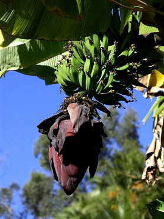上段可看出佛陀在世说法时，暂准弟子吃三净肉、五净肉（不见杀，不闻杀、不为我杀、自死、鸟残等五种肉）。那是因为有些地区全是砂石，不生草木蔬菜，不得已，才姑准他们吃肉维生。但是，那五净肉，都不是真正的肉，而是佛陀以大慈悲神力所化生的假肉，让弟子得尝肉味而已──很可能当时佛陀是以豆类做成了假肉、人造肉给弟子们吃，例如今世的豆腐干，黄豆假肉片，黄豆假肉松之类。
引述了这么多段佛经，读者应该明白了？
请再让我恭录楞严经卷八的几句佛语：
“……云何正性？阿难！如是众生入三摩地，要先严持清净戒律，永断淫心！不餐酒肉！……是修行人，若不断淫及与杀生，出三界者，无有是处！”
这就是说，修行人必须戒淫，戒杀生，戒吃肉，否则，若不断淫不戒杀生，就没有道理可以得脱三界！
同经卷九又载佛言：“……汝勖修行，欲得菩提，要除三惑，不尽三惑，纵得神通，皆是世间有为功用，习气不灭，落于魔道，虽欲除妄，倍加虚伪！如来说为可哀怜者，汝妄自造，非菩提咎，作是说者，名为正说，若他说者，即魔王说。”
您看，佛说，若修行人不戒杀、盗、淫等“三惑”，就算修得神通，也只不过是世间的有为功而已，有漏不灭，将会堕魔道，就算想除妄，越除越多妄！这是咎由自取！可怜！
佛陀每一段正说之后，都加上，若有不符正说者，都是天魔波旬所说。
什么吃肉可修更大神通啦，行淫也可成佛啦，被修密法的人吃了肉的畜生才得超生啦……什么吃肉的外国人多强壮英俊啦，国多富强啦……种种邪说，都用不着我来反驳，佛陀老早就都预先指斥其非了！谁教人信佛不必吃素可以食肉，不妨多多研读佛经吧！说佛陀准许弟子逐渐戒肉，那还可以，若说学佛不一定要吃素，这恐怕是有语病的，很容易引起误解以为学佛无须吃素，更易被嗜肉者利用作为口实鼓吹食肉！
涅磐经卷四载：
迦叶菩萨复白佛言：“世尊，云何如来不听食肉？”
佛言：“善男子，夫食肉者，断大慈种。”
迦叶又言：“如来何故先听比丘食三种净肉？”
佛言：“迦叶，是三种净肉，随事渐制！”
迦叶复白佛言：“世尊，何因缘故，十种不净，乃至九种清净，而复不听。”
佛告迦叶：“亦是因事渐次而制，当知即是现断肉义。”
这不是记载得很明白，佛陀只是不得已才准许渐戒吗？基本上，佛仍是主张戒绝肉食的！
让我再来恭录几段佛经，以进一步证明佛禁肉食。
大乘入楞伽经内载：
“大慧菩萨摩诃萨复白佛言：‘世尊，愿为我说食不食肉功德过失，我及诸菩萨摩诃萨知其义已，为未来现在报习所熏食肉众生而言说之！令舍肉味，求于法味，于一切众生起大慈心，更相亲爱，如一子想，住菩萨地，得阿耨多罗三藐三菩提。”
“佛告大慧菩萨摩诃萨：‘……一切诸肉有无量缘，菩萨于中当生悲悯湣，不应啖食，我今为汝说其少分！大慧！一切众生从无始来，在生死中，轮回不息，靡不曾作父母兄弟男女眷属，乃至朋友亲爱侍使，易生而受鸟兽等身，云何于中取之而食？’
‘大慧！菩萨摩诃萨观诸众生，同于己身，念肉皆从有命中来，云何而食’
‘大慧！诸罗刹等，闻我此说，尚应断肉，况乐法人？’
‘大慧！菩萨摩诃萨在在处处，观诸众生，皆是亲属，乃至慈念如一子想，是故不应食一切肉！’
‘大慧！食肉之人，众生见之，悉皆惊怖，修慈悲心者，云何食肉？’
‘大慧！夫食肉者，身体臭秽，恶名流布！贤圣善人，不用亲狎，是故菩萨不应食肉……’
‘大慧！诸善男女，冢问树下，阿兰若处，寂静修行，或住慈心，或持咒术，或求解脱，或趣大乘，以食肉故，一切障碍，不得成就！是故菩萨欲利自他，不应食肉’
‘大慧！夫食肉者，诸天远离，口气常臭，睡梦不安，觉已忧悚，夜叉恶鬼夺其精气，心多惊怖，食多不足，增长疾病，易生疮癣。’
‘大慧！肉肥美好，肉不清净，生诸罪恶，败诸功德，诸先圣人之所弃舍，云何而许弟子食耶？若言许食，此人谤我！……夫食肉者，有如是等无量过失，断而不食，获大功德！’”
这一段大乘入楞伽经，记载佛言很详细，佛陀以无比慈悲，温和口吻，呼唤大慧菩萨之名，逐句解说为何要戒肉食，在末段，佛陀就已指出，凡是说佛准肉食的，就是谤佛！今人之嗜肉食者，竟口口声声诬指佛准吃肉，佛自己亦吃肉，真是不知所云！这样误导众生！根本全背经意佛心！至于说学佛不必一定吃素，亦不知语出何经何典？有何根据？纵使为了方便接引，亦难免不无削足就履之嫌！开放了肉禁，就会有成千成万的人来学佛了吗？欧美并无肉禁，但是是否如此方便就已使人人来学佛呢？外教并不禁肉，不吃素，但是修士修女日渐减少，已形成严重的人才荒。为什么准吃肉，人们还是不肯踊跃出家？
学佛，首先就要学戒，以戒为师，也须首先学大慈悲。不杀生是首戒，也是慈悲种子，没有慈悲心，没有戒行，哪能自净其心其意？哪能见性？若不守戒，若不慈悲，哪有佛性？哪有佛种？纵然满腹经纶，出口成章，名相纵横，语语珠玑，若不守戒，若不修慈悲心，那又于世道何补？恐怕连凡夫禅也修不成。固然，素食并不一定等于信佛。但是，素食者不食肉，已有隐恻之心，不能说欧美的非佛教徒吃素，光为了自己健康，如我所知，他们吃素的理由，既为保健，亦为了爱惜动物生命。他们虽无佛教徒之名，他们或为天主教徒基督徒，他们的慈悲心并不亚于佛教徒。他们对动物的保护，比很多吃肉的佛教徒更热心更无我。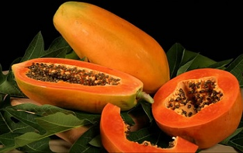每年，美加与英法德素食者协会，十万至数十万人，捐款及大游行，反对屠杀动物，反对猎鲸。（法国女影星碧姬芭铎是素食者领袖之一，她曾领导十万素食者，联合全欧素食者及爱护动物者，大游行大示威，抵制加拿大的猎人猎杀小海狗取得白毛皮。）现在“欧洲经济联盟”与美国均已不准加拿大海狗皮毛进口，加拿大海狗猎杀业已经几乎全部停顿……像这些西方素食人士的护生运动，实在令身为佛教徒而仍吃肉者惭愧！心存慈悲行善，即是佛心！既是菩萨！何必一定要皈依了三宝才算是？既皈依了三宝，又还要吃肉，慈悲种子已灭，又算什么佛教徒呢？若不能断食肉，也只说明是道心不坚，或是未明佛心佛意，或是自欺欺人，或是徒有佛徒之名，而无正信之实，所以才有此违背佛意而食肉之人！当然也有些人是积习已久，一时难改，只有逐步戒肉，以递减方式来戒吃荤，这一种人，他们的内心还是很虔诚信佛、学佛，一心要戒荤的。至于那些振振有词地疾呼学佛可以吃肉不必吃素的人，请多读佛经吧！不要只做膜拜仪式而不读经，以致不知佛教本意。
有人说，只有大乘经典才载有佛说戒肉，小乘经则无，因此小乘可以吃肉。我的答覆是：佛教只有一乘，无分大小，当初佛陀说法，有为方便易懂及便于弟子依次渐修，乃假借大中小乘之喻，实则并无三乘之分（详见法华经），是后世弟子自行分裂，渐成大小乘之别，相互排斥，实乃佛教之不幸！我认为小乘注重修身，乃大乘之基，大乘乃小乘之延伸，本为一体，并无差异。被大乘指为小乘经典的阿含诸经，亦有载及佛陀说法戒杀生及禁止吃荤肉，亦有教弟子度济众生。上文引用的几小节，实未足以概其大观，有些大学者强词夺理硬指楞严经等大乘经典为伪经及非佛所说。我倒要反问，有何根据可以指为伪经伪说？楞严经等大乘经与小乘经有何矛盾不符吗？所载佛语，在基本真理上，有异于小乘经吗？若无矛盾抵触，而又符合佛说原意，就不能视为伪经，更不能以经之出现后于小乘就视为伪造！读经不可刻舟求剑，必须融会贯通！才知大小原来是一乘佛法！慈悲与戒律贯通于两乘，并无二致！主张学佛可以吃肉的学者们，若不是经义未了解就是嗜肉残忍之心未改！说学佛不必吃素，也是未贯经意，未解佛心！削足就履，随波逐流！若为方便接引，亦不应撤出戒律！
要学佛，首先就须守戒！以戒为师，守戒就须戒肉食，必须吃素，没有妥协的余地！学佛发自个人志愿，无人强拉信教。戒者，自律也，不能自律，哪能学佛？戒肉食是自律的戒行第一步！怎可放松而自欺欺人？欺人容易，欺己难！吃肉犯戒，还即身成佛吗？不错，佛陀曾准许弟子吃三净肉，许以渐戒。但是，佛也说过：“我入灭后，尔等三净肉亦须断，不论他杀自死，均须断之！”
今人寓戒于渐者，请再下决心，多生慈悲，必可戒绝口腹之欲，早日戒断荤肉，早获清净！菩提道上，一帆风顺！
楞伽经（大乘入楞伽经异议）卷四载：
“尔时大菩萨，以偈问曰：‘彼诸菩萨等，志求佛道者，酒肉及与葱，饮食为云何？惟愿无上尊，哀湣为演说，愚夫所贪着，臭秽物名称，虎狼所甘嗜，云何而可食？食者生诸过，不食为福善，惟愿为我说，食不食罪福！’”
“大慧菩萨说偈问已，复白佛言：‘惟愿世尊，为我等说，食不食肉功德过恶，我及诸菩萨，于现在未来，当为种种希望食肉众生，分别说法。令彼众生，慈心相向，得慈心已，各于住地，清净明了，疾得究竟无上菩提；声闻绝缘，自地止息已，亦得速成无上菩提，恶邪论法，诸外道辈，邪见断常，颠倒计着，尚有遮法，不听食肉！况复如来，世间救护，正法成就，而食肉耶？’
“佛告大会：‘善哉！善哉！谛听谛听！善思念之！当为汝说！’”
“大慧白佛言：‘唯然受教！’”
“佛告大慧：‘有无量因缘，不应食肉！然我今当为汝略说’”
‘有无量因缘，不应食肉！然我今当为汝略说。’
‘谓一切众生，从本已来，辗转因缘，当为六亲，以亲想故，不应食肉！’
‘驴骡骆驼，狐狗牛马，人兽等肉，屠者杂卖故，不应食肉！’
‘不净气分所生长故，不应食肉！’
‘众生闻气，悉生恐怖，如旃陀罗，及谭婆等，狗见憎恶，惊怖群吠故，不应食肉！’
‘又令修行者，慈心不生故，不应食肉！’
‘凡愚所嗜，臭秽不净，无善名称故，不应食肉！’
‘令诸咒术不成就故，不应食肉！’
‘以杀生者，见行起识，深味着故，不应食肉！’
‘彼食肉者，诸天所弃故，不应食肉！’
‘令口气臭故，不应食肉！’
‘多恶梦故，不应食肉！’
‘空闲林中，虎狼闻香故，不应食肉！’
‘令饮食无节故，不应食肉！’
‘令修行者，不生厌离故，不应食肉！’
‘我尝说言，凡所饮食，作食子肉想！作服药想故，不应肉食！听食肉者，无有是处！’
‘复次，大慧！过去有王，名师子苏陀娑，食种种肉，遂至食人，臣民不堪，即便谋反，断其俸禄，以食肉者有如是过故，不应食肉！’
‘复次，大慧！凡诸杀者，为财力故，杀生屠贩，彼诸愚痴食肉众生，以钱为网，而捕诸肉！彼杀生者，若以财物，若以钩网，取彼空行水陆众生，种种杀害，屠贩求利，大慧！亦无不教，不求不想，而有鱼肉，以是义故，不应食肉！’
‘大慧！我有时说，遮五种肉，或制十种，今于此经，一切种，一切时，开除方便，一切悉断！’
‘大慧！如来应供等正觉，尚无所食，况食鱼肉？亦不教人，以大悲前行故，视一切众生，犹如一子，是故不听令食子肉！’
“尔时，世尊欲重宣此义，而说偈言：
‘曾昔为亲属，鄙秽不净杂，不净所生长，开启悉恐怖！一切肉与葱，及诸韭蒜等，种种放逸酒，修行常远离！亦常离麻油，及诸穿孔牀，以彼诸细虫，于众极恐怖！饮食生放逸，放逸生诸觉，纵觉生贪欲，是故不应食！肉食生贪欲，贪令心迷醉，迷醉长爱欲，生死不解说！为利杀众生，以财网诸肉，二俱是恶业，死堕叫呼狱！若无教想求，则无三净肉，彼非无因有，是故不应食！彼诸修行者，由是悉远离，十方佛世尊，一切咸呵责！展转更相食，死堕虎狼类，臭秽可厌恶，所生常愚痴！多生旃陀罗，猎师谭婆种，或生陀夷尼，及诸食肉性！罗刹猫狸等，遍于是中生，缚象与大云，央掘利摩罗！及此楞伽经，我悉制断肉。诸佛及菩萨，声闻所呵责！食已无惭愧，生生常痴冥，先说见闻疑，已断一切肉！妄想不觉知，故生食肉处，如彼贪欲过，障碍圣道障，未来世众生，于肉愚痴说！言此净无罪，佛听我等食。食如服药想，亦如食子肉！知足生厌离，修行行乞食，安住慈心者，我说常厌离！虎狼诸恶兽，恒科同游止，若食诸血肉，众生悉恐怖！是故修行者，慈心不食肉，食肉无慈慧，永背正解脱！及远圣表相，是故不应食，得生梵志种，及诸修行处，智慧富贵家，斯由不食肉！’”
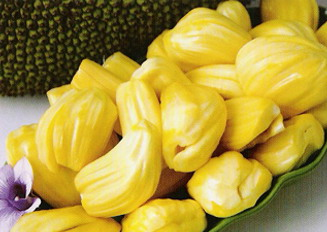 恭读楞伽经卷四上列经文，更加能明白佛陀垂教戒肉，佛说得很清楚：世上没有生来就爱吃鱼吃肉的，都是受了错误的观念教以食肉，才会贪吃肉和希望吃肉，佛说正好指出古今的肉食者心病，时至今日，医学昌明，指出吃肉的坏处，但是，一般世人仍误以为要吃肉才有足够营养，教子教孙去吃肉，教老人家吃肉进补！
佛陀在此经中说得极其明白，衪有时候为了地理环境特殊或其他原因，而设立“遮戒”，暂准弟子吃三净肉或五净肉，或“十制”以外的肉（十制，即是象、牛、马、人龙、蛇、猴、猪、狗、鬼，等十种肉不准吃），（五净肉可以吃，是指（1）眼不见其被屠杀，（2）不闻为我而杀者，（3）并无为我而杀它之嫌疑者，（5）鹰鸟吃剩之肉！）佛暂准特殊情况之弟子吃这些肉，但并非是永久准许吃肉。佛陀清清楚楚地在本经告诉弟子：从讲此部楞严经起，人人皆必须绝对断绝肉食！无论任何肉类，在任何时间场合，均不可吃肉吃荤，除非是为了疗病才准方便开遮，其余一切人都应断绝吃肉！(以肉疗病，在现代医学是罕见的！)
佛又说：学佛修行人，到了究竟(严格)之处，甚至可以断绝一切饮食！何况肉食呢？
佛陀绝对不叫人食肉，因为佛陀以大慈大悲心为前提，叫人视众生都如自己的儿子，不应吃儿子的肉！
佛又说：倘若没有人教人吃肉，教人想求吃肉，又哪会需要暂设“三净肉”呢？(分明吃肉只是心理作用的贪念与杀生念在作祟而已！)不能断肉的人，多半是受了错误的肉食补身观念所误教误导，加上自己嘴馋好吃美味，又不信佛，又不肯深入佛经，又不信现代医学的发现，更不信新的营养学。他们自己吃肉，自己去慢性自杀，还要反对别人吃素，还要诱人吃肉，拖人下水！但是，此种人的罪业，还比不上那些满口讲名相大学问，开口是空，闭口是自性，理论随时可获博士学位的一些佛学大家，他们是笔下、口头，及纸上研究佛学，却不实行佛教的修行，更不守戒律，还要以其佛学学问来强词夺理，教学佛的居士别吃素，甚至于教出家人也别吃素，都可吃三净五净肉，他们还要利用著名导师的文字来支持他们的“学佛可吃肉”大道理，这种断章取义方式来盗用导师语句，来否定佛说真理，既陷导师于不义，又盲导众生，这才是罪孽深重，无可宽恕！他们的未来果位，早已在无间地狱等候着了！只可怜众生无名，很容易就被这些似是而非的邪说所惑，用不着守戒也不必戒肉，不必修行，就可成佛，岂不简便？难怪很多人容易轻信了！
这些邪说，正如佛陀开示，凡此皆非佛说，而是魔说（波旬说）。
我再次一提楞伽经中载有佛言：
“未来之世，有愚痴人，妄说毗尼，坏乱正法，诽谤于我，言听食肉，亦自曾食。
“大慧！我于诸处，说遮十种，许三种者，是渐禁断，令其修学。”
“今此经中，自死他杀，凡是肉食，一切悉断。若有痴人，谤言如来，听人食肉，当如是人，恶业所缠，必当永堕不饶益处。”
佛陀早就预见会有恶业所缠，自造地狱因的人诬指衪准吃肉，而且自己也吃肉！可不是，现在那些仍吃肉的大学问家，将佛在世时，用神力变化的肉和夺取物命、畜命犯杀生戒的肉混为一谈。更不提“三净肉”“五净肉”……等，是佛陀住世的权宜方法，和渐禁的苦心。也不看佛在楞伽经中明确的交代“凡是肉食，一切悉断”的律法，而故意断章取义的纷纷指称佛陀吃肉，多少世人不曾研读佛经，竟惑于大学问家们的“人文”学术学位或名气，信以为真呢！当然，也还有言行一致笃行守戒茹素的佛学学者，不妄语，不谤佛，不邪见，不邪说，能正遍知！值得世人尊敬与学习，本文不能一竹篙打了一船人！
“依法不依人，依正法不依邪法，依正人不依邪人！”
在“大智度论”中，龙树菩萨开示：
这几句很值得学佛者深省！该依佛说的正法呢？抑或听从非佛说的邪见？是依佛呢？抑或为名所惑依从邪人？学佛人应有冷静明智的抉择！
学佛是否不一定需要吃素？学佛是否可以吃荤吃肉？可否行淫？可否妄语误导众生？
凡此问题，请恭读佛经吧！答案都在佛经所载的佛言之内！
而且，别忘了，佛言：“以戒为师！”
我学佛没学到什么，就只学会“以戒为师”，与吃素而已！我觉得已经很幸福了，我愿再加上一句：“以本师释迦牟尼为师！”
我在此不厌其烦的请读者再聆听一次本师释迦牟尼佛的法音，并以此正法，为修行的依归，莫再依于邪师邪说是幸！
“……未来之世，有愚痴人，妄说毗尼，坏乱正法，诽谤于我，言听食肉，亦自曾食。”
“大慧！我于诸处，说遮十种，许三种者，是渐禁断，令其修学。”
“今此经中，自死他杀，凡是肉者，一切悉断。”
“若有痴人，谤言如来，听人食肉，当知是人，恶业所缠，必当永堕不饶益处。”
原载《天华》第110期：1988年7月1日
原载《天华》第111期：1988年8月1日
收录于《健康长寿释疑 ── 吃肉的危险》
网注：
关于嘉瓦仁波切与班禅是否吃素？
冯冯在《弘扬佛教的沈家桢博士》一文予于澄清纠正。